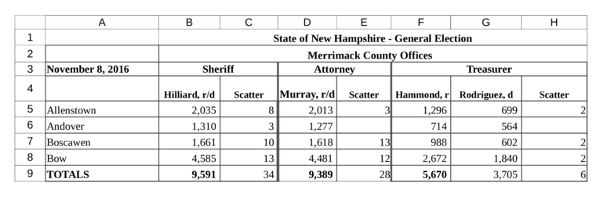

Install R from https://cloud.r-project.org
Also install RStudio, an interface for working in R: https://www.rstudio.com/products/rstudio/download
Create new objects with <-:
## [1] 12
All R statements where you create objects have the same form:
Errata:
<- is ALT-minus= is an alternative to <-. It’s either convenient and the universal assignment operator or dangerous and lazy.
-> also exists, because R.R has a large [ed: bloated] collection of built-in functions.
Called like this:
function_name(arg1 = val1, arg2 = val2, ...)
For example:
## [1] 1 2 3 4 5 6 7 8 9 10
Assign the return value:
## # A tibble: 3 x 3
## manufacturer model displ
## <chr> <chr> <dbl>
## 1 audi a4 1.8
## 2 audi a4 1.8
## 3 audi a4 2## # A tibble: 3 x 3
## manufacturer model displ
## <chr> <chr> <dbl>
## 1 audi a4 2.8
## 2 audi a4 2.8
## 3 audi a4 3.1mpg %>%
select(manufacturer, model, displ) %>%
filter(displ > 2) %>%
mutate(displ_squared = displ ^ 2) %>%
head(3)## # A tibble: 3 x 4
## manufacturer model displ displ_squared
## <chr> <chr> <dbl> <dbl>
## 1 audi a4 2.8 7.84
## 2 audi a4 2.8 7.84
## 3 audi a4 3.1 9.61RStudio Cheatsheets:
Books:
R for Data Science, especially the section “Wrangle”
Courses:
DataCamp’s Introduction to R
R Basics from Harvard’s edX Data Science Series
Install once:
install.packages("tidyverse")
install.packages("tidyxl")
install.packages("devtools")
devtools::install_github('MEDSL/medslcleaner')
Load every time:

Multiple headers:
jurisdiction
office
candidate
precinct
## # A tibble: 8 x 3
## ..1 `State of New Hampshire - General Election` ..3
## <chr> <chr> <chr>
## 1 <NA> Merrimack County Offices <NA>
## 2 42682 Sheriff <NA>
## 3 <NA> Hilliard, r/d Scatter
## 4 Allenstown 2035 8
## 5 Andover 1310 3
## 6 Boscawen 1661 10
## 7 Bow 4585 13
## 8 TOTALS 9591 34Using medslcleaner and tidyxl,
Identify which cells are data and which are headers
Define the relationships between data cells and header cells
## address row col data_type value
## 1 B4 4 2 character Hilliard, r/d
## 2 C4 4 3 character Scatter
## 3 D4 4 4 character Murray, r/d
## 4 E4 4 5 character Scatter
## 5 F4 4 6 character Hammond, r
## 6 G4 4 7 character Rodriguez, d
Each row gives the contents of a single spreadsheet cell;
Columns row and col give the cell’s position;
Excel identifies columns with letters, but we’re using numbers.
Consider again the precinct names in column 1 of the Merrimack spreadsheet.
## address row col data_type value
## 1 A5 5 1 character Allenstown
## 2 A6 6 1 character Andover
## 3 A7 7 1 character Boscawen
## 4 A8 8 1 character Bow
## 5 A9 9 1 character TOTALSTo associate each precinct header with all the cells to their right:
We just created a new variable precinct
It takes as values the contents of cells where col is 1 (otherwise NA) …
For all the cells to the right of the header cells in the spreadsheet
The result:
## address row col data_type value precinct
## 1 B5 5 2 numeric 2035 Allenstown
## 2 C5 5 3 numeric 8 Allenstown
## 3 D5 5 4 numeric 2013 Allenstown
## 4 E5 5 5 numeric 3 Allenstown
## 5 F5 5 6 numeric 1296 Allenstown
## 6 G5 5 7 numeric 699 Allenstownas_header
function (.data, idcol, rows = TRUE, cols = TRUE,
right = FALSE, down = FALSE, .drop = TRUE)
Identifying headers:
Arguments row and col select header cells by spreadsheet row and column indexes
If we specify rows = 2, values of the second row in the spreadsheet would be considered header values
With both rows = 2 and cols = 1, we could define the cell in the second row and first column as a header cell
In more difficult cases, we can use logical functions for selection
as_header
function (.data, idcol, rows = TRUE, cols = TRUE,
right = FALSE, down = FALSE, .drop = TRUE)
Identifying data:
Identify data cells by giving directions from header cells
We can move rightward, downward, or both
as_header
function (.data, idcol, rows = TRUE, cols = TRUE,
right = FALSE, down = FALSE, .drop = TRUE)
Argument .drop:
Defining cells as headers drops them from the data after moving their values into a new column
One way to think of the as_header function is as transformation of headers from spreadsheet cells into characteristics of spreadsheet cells.
Finally, to keep only the columns we created and rename the value column votes:
## Observations: 35
## Variables: 5
## $ votes <int> 2035, 8, 2013, 3, 1296, 699, 2, 1310, 3, 1277, NA...
## $ precinct <chr> "Allenstown", "Allenstown", "Allenstown", "Allens...
## $ jurisdiction <chr> "Merrimack County Offices ", "Merrimack County O...
## $ office <chr> "Sheriff", "Sheriff", "Attorney", "Attorney", "Tr...
## $ candidate <chr> "Hilliard, r/d", "Scatter", "Murray, r/d", "Scatt...cells <- read_xlreturns(merrimack_path)
cells <- cells %>%
as_header('jurisdiction', rows = 2, cols = 2,
down = TRUE, right = TRUE) %>%
as_header('precinct', cols = 1, right = TRUE) %>%
as_header('office', rows = 3, right = TRUE,
down = TRUE) %>%
as_header('candidate', rows = 4, down = TRUE)
# Drop remaining header rows and `finalize`
cells <- cells %>%
filter(row > 4 & col> 1) %>%
finalize()Schema define our expectations about data:
- name: votes
title: Vote Count
description: Number of votes received.
source: Precinct returns for `jurisdiction`.
type: integer
constraints:
required: true## List of 6
## $ name : chr "votes"
## $ title : chr "Vote Count"
## $ description: chr "Number of votes received."
## $ source : chr "Precinct returns for `jurisdiction`."
## $ type : chr "integer"
## $ constraints:List of 1
## ..$ required: logi TRUEdata(wyoming, package = 'medslcleaner')
wyoming %>%
mutate(precinct = substr(precinct, 1, 10)) %>%
select(state_postal, jurisdiction, precinct,
office, candidate, writein, votes) %>%
head()## state_postal jurisdiction precinct office candidate writein votes
## 1 WY Albany Shields St US House [Write-in] TRUE 7
## 2 WY Albany Albany Cou US House [Write-in] TRUE 5
## 3 WY Albany Harmony Sc US House [Write-in] TRUE 2
## 4 WY Albany Centennial US House [Write-in] TRUE 0
## 5 WY Albany Rock River US House [Write-in] TRUE 1
## 6 WY Albany Shields St US House [Write-in] TRUE 2